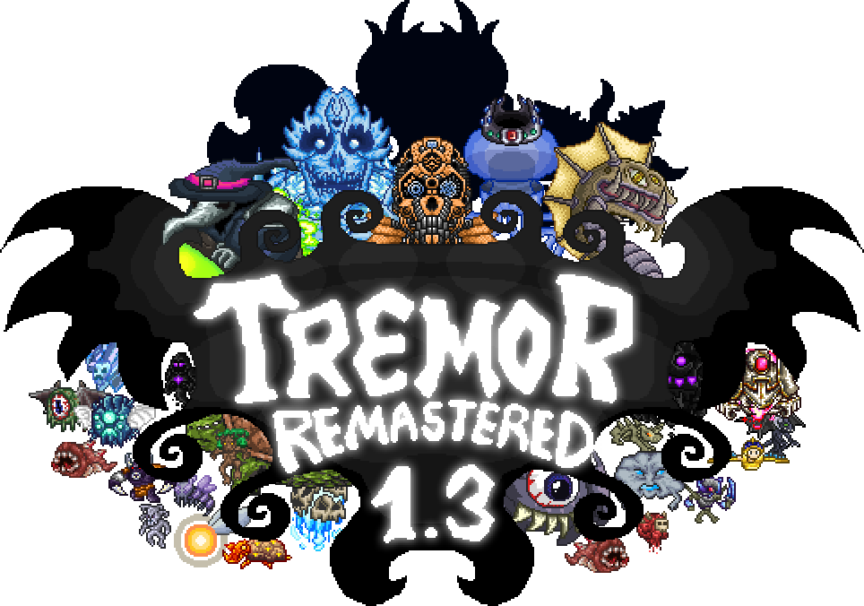
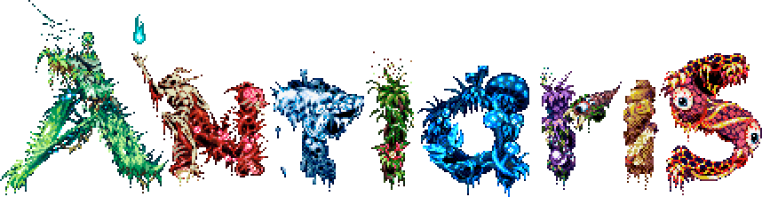
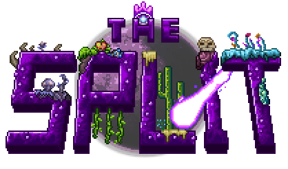
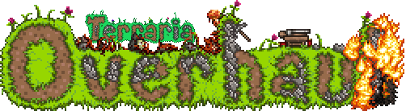

Лучшие моды для Террарии
-
TREMOR REMASTERED

Достаточно известный мод от наших российских разработчиков. Он добавляет в игру множество новых вещей, а также имеет свою собственную русскоязычную вики.Что содержит:
- 1600+ новых предметов
- 150+ мобов
- 21 боссов
- 13 нпс
- 1 класс
- 2 биома
- 2 события
-
ANTIARIS

Мод от создателей Tremor Remastered. Он также добавляет в игру много контента, однако в этот раз разработчики заверяют, что для них важно качество, а не количество.Что содержит:
- 440+ новых предметов
- 20+ мобов
- 2 босса
- 2 нпс
- 6 структур
- Поддержка русского, итальянского и китайского языков
-
SPLIT

Ещё один мод от разработчиков Tremor Remastered. Как и 2 предыдущих, добавляет в игру множество контента, и разработчики опять заверяют, что для них важно качество, а не количество.Что содержит:
- 250+ новых предметов
- 25+ мобов
- 2 босса
- 4 нпс
- 1 структур
- Поддержка русского языка
-
TERRARIA OVERHAUL

Тоже достаточно интересный мод, который вместо добавления огромного контента в игру, делает её реалистичней, а именно: добавляет систему пожаров, реалистичное поведение срубленных деревьев, времена года и ещё много чего. Совсем недавно вышла новая версия, в которой присутствуют ремиксы почти всех оригинальных саундтреков игры.Что содержит:
- 30+ новых предметов
- Парочку мобов
- Физика всего живого, почти
- Возгораемость, горение
- Несколько новых событий
- Эмодзи
- Грозы
- Торнадо
- Быстрая раскладка
- Перезарядка
- Рокет — джамп
- Много крови при убийствах мобов и боссов
- Смена сезонов года (Один месяц длится 12 игровых дней
- Респрайты
- Для некоторых предметов добавлена система прочности
- Новая растительность
- Новые версии оригинальных саундтреков
- И ещё много чего
-
CALAMITY MOD

Достаточно интересный мод, выделяющийся на фоне остальных, а именно своей изюминкой — Revengeance Mode, являющимся усиленной версией ванильного Expert мода. При включении этого мода у вас появляются 2 новые шкалы — Адреналин и Ярость. Адреналин повышается, если вы не получаете урона во время схватки с боссом. При получении урона, соответственно, уровень адреналина падает и его придётся заново повышать. Его можно использовать лишь во время битв с боссами. Ярость немного повышает ваш урон на несколько секунд. Зарабатывается по мере получения урона. Также мод добавляет множество предметов, как и любой другой глобальный мод.Примечание: Если вы хотите, чтобы в новых биомах, добавляемых модом, играла новая музыка вам нужно ещё отдельно установить мод Calamity Mod Music.
Что содержит:
- 1250+ новых предметов
- 250+ мобов
- 24 босса
- 3 биома
- Несколько новых уровней сложности